Mammals
American Marten (Martes americana)
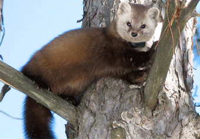The American Marten, or Martes americana, has a long, slender body with a pointed face, small prominent ears, short legs, and a long furry tail. They often attain lengths of up to 25 inches, and can weigh up to 2.5lbs.
Beaver (Castor canadensis)
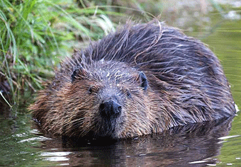The Beaver, or Castor canadensis, is the largest aquatic rodent in North America. It is easily recognized by its large, flat, bare, scaled tail and fully webbed rear feet. They are generally found along wooded streams, marshes, small lakes, and ponds.
Black Bear (Ursus americanus)
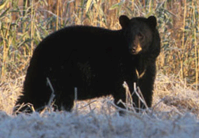The Black Bear, or Ursus americanus, is the only bear habiting Vermont. It is the smallest of the three bear species found in North America. They are relatively shy animals, and are seldom seen by people.
Eastern Bobcat (Lynx canadensis)
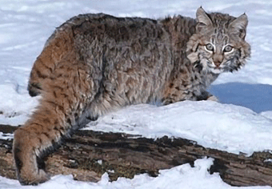The Eastern Bobcat, or Lynx canadensis, is common throughout most of the state, even though it is rarely seen. They can be found in habitats such as coniferous forests, bogs or swamps, and forested mountain areas. Particularly in the northeast, rocky ledges are important features to its habitat.
Chipmunk (Tamias striatus)
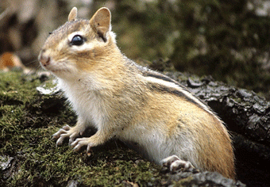The Chipmunk, or Tamias striatus, are very versatile, and can be found nearly everywhere. Their main habitats are deciduous forests, forest edges, and areas with thick brush. They may also be found in meadows, fields and along fence lines. However, even though it is a forest species, they tend to be very comfortable living around and/or near people.
Eastern Cottontail (Sylvilagus floridanus)
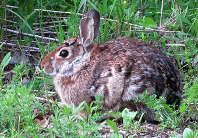The Eastern Cottontail, or Sylvilagus floridanus, occur all throughout the United States, and are not Native to Vermont. They are extremely rare and, if found at all in Vermont, are generally confined to the most southern part of the state.
Eastern Coyote (Canis latrans)
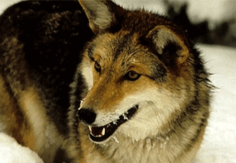The Eastern Coyote, or Canis latrans, has a high-pitched howl ending with a series of yips, which can sometimes be heard at dawn or dusk. The habitat in which they thrive in include forested areas of hardwood and softwood trees, open areas such as pastures and fields, wetlands, and sometimes developed areas.
Fisher (Martes pennanti)
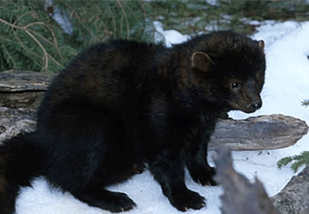The Fisher, or Martes pennanti, is very common in Vermont, and in fact are found in virtually every town within the state. The Fisher has a long body, and dark brown to light brown fur. Its front and hind legs are black and it has a long, thick, black tail.
Gray Fox (Urocyon cinereoargenteus)
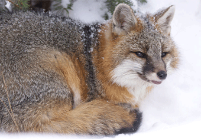The Gray Fox, or Urocyon cinereoargenteus, sometimes known as the flying fox, or tree fox, because the Gray Fox has claws that enable it to climb trees. They generally prefer dense hardwood or mixed hardwood/softwood forests along the banks of rivers and streams. They can occasionally also be found in overgrown fields or meadows while foraging.
Gray Squirrel (Sciurus carolinensis)
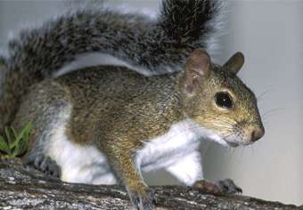The Gray Squirrel, or Sciurus carolinensis, can be found in mature hardwood forests dominated by hard mast, or nut producing trees such as oak, hickory, and beech. The home range of a gray squirrel varies from 1 to 25 acres depending upon habitat quality, however, normal daily movements on average don't exceed 160 feet.
Little Brown Bat (Myotis lucifugus)
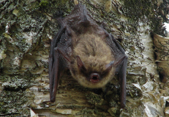The Little Brown Bat, or Myotis lucifugus, is nocturnal, meaning that they are active at night. Bats have poor eyesight, so they depend on their own unique sonar system, called echolocation, to locate and catch prey during the hours of darkness. Bats are critical components in every ecosystem, as they forage on insects that include both forest and agricultural pests.
Long-Tailed Weasel (Mustela frenata)
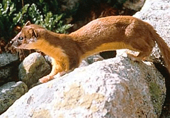The Long-Tailed Weasel, or Mustela frenata, is a night hunter, taking a variety of animals in trees, on the ground and from burrows below ground. They can be found in open woodlands, transitional areas between forests and fields, and open fields. However, the most common areas to find them are on edge areas, which are the borders between forests and open fields.
Mink (Mustela vison)
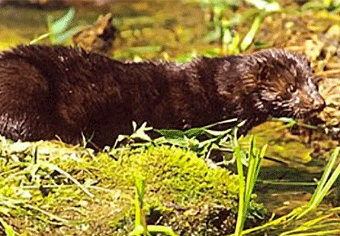The Mink, or Mustela vison, is one of the most aquatic members of the Weasel family. Though water is the determining factor when establishing territories, Mink are more often found in coniferous and mixed forests than in deciduous forests. They can be found along streams, rivers, lakes and marshes. In general, they are most often found in any area with a permanent water source and dense vegetation.
Moose (Alces alces)
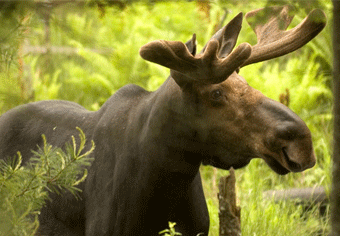The Moose, or Alces alces, can weigh up to 1,500lbs, reach up to 7 feet in height, and they can live up to 25 years. They are fast animals, running at a max speed of 35mph. Moose sport a long head, a large nose and upper lip, and a dewlap, hanging from its throat. They are excellent swimmers, frequently being seen feeding on water plants in ponds during summer. In fact, they can dive underwater a whole 18 feet!
Muskrat (Ondatra zibethica)
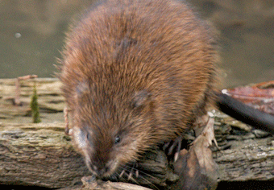The Muskrat, or Ondatra zibethica, is a common semi-aquatic species found all throughout Vermont. They are commonly mistaken for Beaver, however, they can be easily distinguished by their much smaller stature, and long, vertically-flattened tail. Muskrats are highly favor and are rarely far away from a freshwater source, such as Cattail marshes, and swamps.
Porcupine (Erethizon dorsatum)
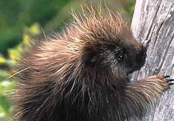The Porcupine, or Erethizon dorsatum, is a slow moving, medium-sized mammal, best known for its sharp quills that cover its body. Porcupine have poor eyesight, relying on its sense of hearing and smell, as well as its quills to defend against predators. The quills covering its body are barbed, which hinders removal, causing them to slowly work their way from the outside of the animal, to the inside, and then back out again. An animal hit in a vital area can ultimitely die, thus, most learn avoid the Porcupine.
Raccoon (Procyon lotor)
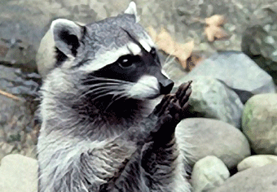The Raccoon, or Procyon lotor, are medium-sized nocturnal mammals found in a wide variety of habitats, from open forests and along streams, to suburban and urban environments. However, they are most commonly found habiting areas with access to freshwater. Due to their adaptability to such environments, the spread of Rabies is of serious concern in the Northeast. Raccoons live in hollow trees, underground dens, brush piles, lumberyards, haylofts, and sometimes, piles of garbage or dumpsters.
Red Fox (Vulpes vulpes)
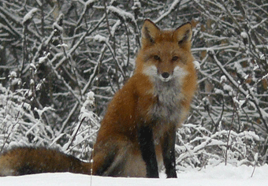The Red Fox, or Vulpes vulpes, is not native to Vermont, unlike the Gray Fox. The Red Fox is slightly larger than the Gray Fox, and occupies a wider range of habitats, such as - mixtures of forest and open area. The Red Fox live in dens, which are dug underground. They are most active during dawn and dusk, but will occasionally be seen foraging during the day.
River Otter (Lutra canadensis)
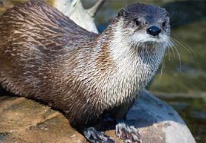The River Otter, or Lutra canadensis, lives an extremely aquatic lifestyle, and in fact is the best swimmer of the entire Weasel family. It inhabits streams, rivers, ponds, and lakes with dense vegetation. They live in burrows, constructed on the banks of their aquatic habitiat, or in submerged trees. They are also sometimes found living in abandoned burrows of other animals, such as Beaver lodges.
Short-Tailed Weasel (Mustela erminea)

The Short-Tailed Weasel, or Mustela erminea, occupies a wider variety of habitats than the Long-Tailed Weasel, which include wetlands, forests, fields, and wooded areas. They require areas of heavy cover, but tend to avoid forests that are too dense. They will burrow, or build, a nest in rock or wood piles, hollow trees, or under buildings. Often rather than building their own burrow, they will simply take over one of their prey's.
Snowshoe Hare (Lepus americanus)

The Snowshoe Hare, or Lepus americanus, is also called the "Varying Hare," because its color changes from brown to white in the winter. Hare are often mistaken for Rabbit, but can be easily distinguished by their much larger back feet. Ideal hare habitat is around coniferous forests, with brushy deciduous vegetation. Aspen, spruce, and cedar swamps are also prime habitats for Snowshoe Hare.
Striped Skunk (Mephitis mephitis)
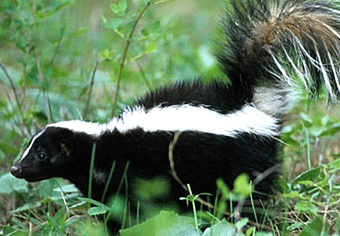The Striped Skunk, or Mephitis mephitis, is best known for its ability to spray an extremely pungent and unpleasant garlic-like scent, in order to ward off potential threats. They are highly adaptable animals that can be found in a wide variety of habitats, from open fields, to urban areas. Striped Skunks are most active during sunset to sunrise, thus they are considered to be nocturnal.
Virginia Opossum (Didelphis virginiana)
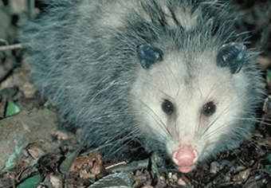The Virginia Opossum, or Didelphis virginiana, is the only marsupial, or pouched mammal, native to North America. Opossums are nocturnal, being most active at night, and are very aggressive animals toward predators. They will often hiss, screech, or show all their teeth to scare away attackers. They also are known for playing dead, rolling over on its back and closing its eyes. Despite their aggression toward predators, they are rarely known to carry disease, such as Rabies.
White-Tailed Deer (Odocoileus virginianus)
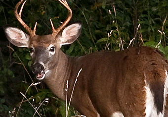The White-Tailed Deer, or Odocoileus virginianus, are one of the most studied and talked about species in the whole state. White-Tailed Deer are completely vegetarian, with their diet consisting mainly of twigs, leaves, grasses, fruits, and nuts. Known as a species that prefers forest "edge," they tend to inhabit areas that feature a blend of large woodlots and agricultural openings.
Woodchuck (Marmota monax)
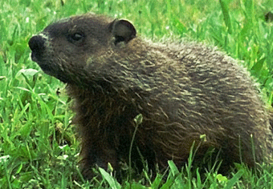The Woodchuck, or Marmota monax, is a medium-sized rodent. It's related to the Ground Squirrel and Marmot. It is known for its remarkable excavating ability, which allows it to create extensive networks of tunnels and burrows beneath open fields and meadows. They are herbivorous animals, with the majority of its diet consisting of fruits, flowers, shrubs, clover, alfalfa, grasses, and herbs.